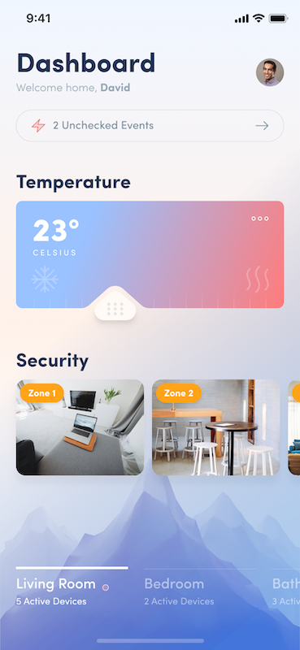
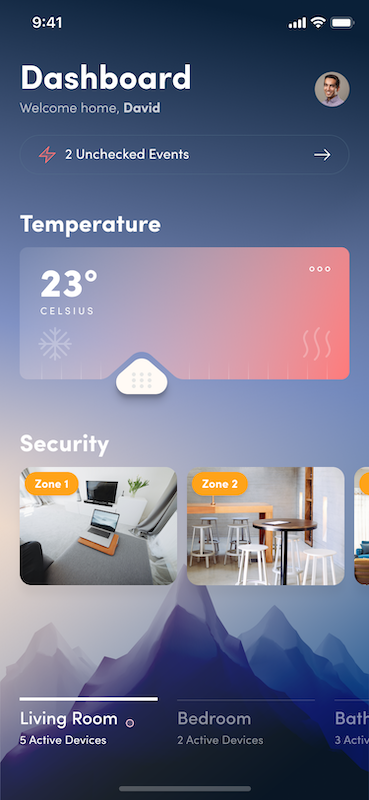

Xamarin.Forms UI Challenges - Day vs Night
Sometimes when developing Xamarin.Forms user interfaces you get to a point where you just need to handle the drawing yourself, and for that SkiaSharp is invaluable. And that’s one of the core pieces of this UI Challenge, using SkiaSharp to create controls that are unlike any other.
First, I should mention that this amazing design concept that we are reproducing was created by Ionut Zamfir over at Dribbble. The key elements that drew my attention to this layout were:
- Beautiful use of colours
- Light and Dark themes
- Complex multi-colour gradients
- Unique custom slider for the temperature
Seriously, just check it out in all it’s beauty:
|  |  |
Xamarin UI July
This post is part of Xamarin UI July, organised by Steve Thewissen. Today is day 13 with another exciting post coming out every day for the rest of the month.
Let’s break it down
So let’s try and reproduce this layout in Xamarin.Forms. When you look at it, the overall page layout itself is fairly straight forward consisting of a main Grid with a StackLayout to lay the elements out down the page.
Pro Tip: Grids are a great root layout element because they allow you to position elements proportionally on a page whilst still allowing overlapping elements
The Background
If you focus just on the background of the design it has two elements:
- A multi-colour gradient across the entire page
- The mountain image, at the bottom of the page
For the implementation the main page consists of a SKCanvasView for the background gradient. There is also an Image with a VerticalOptions of End which positions it at the bottom of the screen but above the gradient.
<Grid>
<Grid.RowDefinitions>
<RowDefinition Height="*" />
<RowDefinition Height="Auto" />
</Grid.RowDefinitions>
<skia:SKCanvasView
x:Name="BackgroundGradient"
Grid.RowSpan="2"
HorizontalOptions="Fill"
PaintSurface="BackgroundGradient_PaintSurface"
VerticalOptions="Fill" />
<Image
Grid.RowSpan="2"
Aspect="AspectFill"
HorizontalOptions="Fill"
Source="{DynamicResource MountainImage}"
VerticalOptions="End" />
...The order of elements in your Xaml is important because it implies the z-order. Which is to say, elements that appear later in your Xaml will appear in-front of earlier elements
The background gradient is a little more complex than it may first appear because it isn’t just a linear gradient between two colours. It’s actually a radial gradient between three colours. This complexity means we can’t use something like PancakeView for the gradient, instead we can render this with SkiaSharp. Complex gradients are surprisingly easy in SkiaSharp, but does require you implement them in code.
Code to render gradient
The following code is called whenever the BackgroundGradient canvas needs to be drawn. First thing it does is load up the colours from the application resources (because different themes have different gradient colours - but more on that later). Then it uses those colours to create a RadialGradient shader which is drawn over the entire canvas area.
private void BackgroundGradient_PaintSurface(object sender, SkiaSharp.Views.Forms.SKPaintSurfaceEventArgs e)
{
SKImageInfo info = e.Info;
SKSurface surface = e.Surface;
SKCanvas canvas = surface.Canvas;
canvas.Clear();
// get the brush based on the theme
SKColor gradientStart = ((Color)Application.Current.Resources["BackgroundGradientStartColor"]).ToSKColor();
SKColor gradientMid = ((Color)Application.Current.Resources["BackgroundGradientMidColor"]).ToSKColor();
SKColor gradientEnd = ((Color)Application.Current.Resources["BackgroundGradientEndColor"]).ToSKColor();
// gradient background with 3 colors
backgroundBrush.Shader = SKShader.CreateRadialGradient (
new SKPoint(0, info.Height * .8f),
info.Height*.8f,
new SKColor[] { gradientStart, gradientMid, gradientEnd },
new float[] { 0, .5f, 1 },
SKShaderTileMode.Clamp);
SKRect backgroundBounds = new SKRect(0, 0, info.Width, info.Height);
canvas.DrawRect(backgroundBounds, backgroundBrush);
}The documentation and samples for SkiaSharp are excellent, don’t be scared to check them out. For example, here are the docs for Creating Radial Gradients
Temperature Slider
Okay, this is the fun bit, that temperature slider. Notice how it has a slider thumb and above it, it dynamically eats into (or clips) the slider background. There isn’t a control like this in Xamarin.Forms (or anywhere for that matter), so it’s time to write a control in SkiaSharp, named appropriately GaugeControl.
The background of the slider is really just a RoundedRect with a gradient fill. No big deal. However, the trick is to have a bit “clipped” out where the slider thumb is. Well, it turns out that with SkiaSharp you can provide a path to clip out of the drawing, which is what we do above the slider thumb.
SKPath clipPath = SKPath.ParseSvgPathData("M.021 28.481a25.933 25.933 0 0 0 8.824-2.112 27.72 27.72 0 0 0 7.391-5.581l19.08-17.045S39.879.5 44.516.5s9.352 3.243 9.352 3.243l20.74 18.628a30.266 30.266 0 0 0 4.525 3.545c3.318 2.263 11.011 2.564 11.011 2.564z");
...
// get density
float density = info.Size.Width / (float)this.Width;
// get the path of the clip region
var scaledClipPath = new SKPath(clipPath);
scaledClipPath.Transform(SKMatrix.MakeScale(density, density));
scaledClipPath.GetTightBounds(out var tightBounds);
// apply translations to position the clip path
canvas.Translate(translateX, translateY);
canvas.ClipPath(scaledClipPath, SKClipOperation.Difference, true);
canvas.Translate(-translateX, -translateY);
...One thing to note in the code above is that when you are dealing with SkiaSharp you are dealing with pixels, so if you are used to working with Xamarin.Forms units you need to actually work out the scaling of your device.
The key line in there is the ClipPath method call which uses the path and a SKClipOperation.Difference which basically means, only render whatever you output where it falls outside of the clip path. One thing to consider is that every drawing operation you perform after you call ClipPath will have the clipping applied. But one little trick you can do is restore you canvas to a point before the clipping by using SKAutoCanvasRestore.
// do some drawing stuff here - it won't be clipped
...
using (new SKAutoCanvasRestore(canvas))
{
...
canvas.ClipPath(scaledClipPath, SKClipOperation.Difference, true);
...
// everything here will have the clipping applied
...
}
// after the USING the canvas is restored to it's previous state so no clipping will happen
...Handling User Input
It’s one thing to draw the control, it’s quite another to make it interact with the user. In our case, we want to detect when the user drags on the control so that we can update the position of the thumb slider and the clipping path. To do this we use a Xamarin.Forms effect which reports touch operations.
<Grid>
<skia:SKCanvasView x:Name="TempGaugeCanvas" PaintSurface="TempGaugeCanvas_PaintSurface" />
<Grid.Effects>
<local:TouchEffect Capture="True" TouchAction="TouchEffect_TouchAction" />
</Grid.Effects>
</Grid>So when we get a TouchAction we update the percent of the slider, which in turn calls InvalidateSurface causing a redraw of the SkiaSharp canvas.
private void TouchEffect_TouchAction(object sender, TouchEffect.TouchActionEventArgs args)
{
Percent = (args.Location.X / TempGaugeCanvas.Width) * 100;
}
public double Percent
{
get => percent;
set
{
percent = value;
TempGaugeCanvas.InvalidateSurface();
}
}The
TouchEffectI lifted from the awesome SkiaSharp samples. For more about the TouchEffect check out Finger Painting in SkiaSharp in the Docs.
Switching Themes
Another interesting bit about this design is the dark and light themes. For this UI Challenge we make it so when you click on the profile image it toggles between dark and light. In a real application you would probably tie this to user preferences, or even cooler, to the ambient light sensor of the device so it automatically switches based on lighting conditions. For us thought, it’s just tied to the profile image, like so:
private void ProfileImage_Tapped(object sender, EventArgs e)
{
if (themeName == "light")
{
themeName = "dark";
}
else
{
themeName = "light";
}
ThemeHelper.ChangeTheme(themeName);
}The result is quite nice though, as shown in this video:
Multiple Theme Files
I have multiple themes (technically ResourceDictionary) that have different values for resources. For example:
LightTheme.xaml
<?xml version="1.0" encoding="UTF-8"?>
<ResourceDictionary xmlns="http://xamarin.com/schemas/2014/forms"
xmlns:x="http://schemas.microsoft.com/winfx/2009/xaml"
x:Class="DayVsNight.Themes.LightTheme">
<!-- Background Image -->
<x:String x:Key="MountainImage">mountain_light</x:String>
<Color x:Key="HeaderColor">#213654</Color>
<Color x:Key="ArrowColor">#768ea0</Color>
<Color x:Key="BorderColor">#d2d7dd</Color>
<Color x:Key="TagColor">#ffa318</Color>
<Color x:Key="TabSubTextColor">#96a7dd</Color>
<Color x:Key="SubTextColor">#95a8b6</Color>
<Color x:Key="TempLabelColor">#ffffff</Color>
<!--BackgroundGradients-->
<Color x:Key="BackgroundGradientStartColor">#FFF1EA</Color>
<Color x:Key="BackgroundGradientMidColor">#D6D7E3</Color>
<Color x:Key="BackgroundGradientEndColor">#F0F6FF</Color>
<!--Gauge Gradients-->
<Color x:Key="GaugeGradientStartColor">#99C2FF</Color>
<Color x:Key="GaugeGradientEndColor">#FB7D80</Color>
</ResourceDictionary>DarkTheme.xaml
<?xml version="1.0" encoding="UTF-8"?>
<ResourceDictionary xmlns="http://xamarin.com/schemas/2014/forms"
xmlns:x="http://schemas.microsoft.com/winfx/2009/xaml"
x:Class="DayVsNight.Themes.DarkTheme">
<!-- Background Image -->
<x:String x:Key="MountainImage">mountain_dark</x:String>
<Color x:Key="HeaderColor">#FFFFFF</Color>
<Color x:Key="ArrowColor">#768ea0</Color>
<Color x:Key="BorderColor">#d2d7dd</Color>
<Color x:Key="TagColor">#ffa318</Color>
<Color x:Key="TabSubTextColor">#FFFFFF</Color>
<Color x:Key="SubTextColor">#FFFFFF</Color>
<Color x:Key="TempLabelColor">#ffffff</Color>
<!--BackgroundGradients-->
<Color x:Key="BackgroundGradientStartColor">#E8D6CB</Color>
<Color x:Key="BackgroundGradientMidColor">#6683A9</Color>
<Color x:Key="BackgroundGradientEndColor">#192E4A</Color>
<!--Gauge Gradients-->
<Color x:Key="GaugeGradientStartColor">#7A89B1</Color>
<Color x:Key="GaugeGradientEndColor">#FB7D80</Color>
</ResourceDictionary>For this challenge we just have a dark and light theme, but of course you could have as many themes as you like. Or even allow the user to create their own.
Theme Switcher
To go along with the themes we have a helper to switch between them. This essentially just loads resources from a resource dictionary into the application resources and then fires a message through the MessagingCenter so that other parts of the application can know when themes are switched.
public static class ThemeHelper
{
public static string CurrentTheme;
public static void ChangeTheme(string theme)
{
// don't change to the same theme
if (theme == CurrentTheme) return;
ResourceDictionary applicationResourceDictionary = Application.Current.Resources;
ResourceDictionary newTheme = null;
switch (theme.ToLowerInvariant())
{
case "light":
newTheme = new LightTheme();
break;
case "dark":
newTheme = new DarkTheme();
break;
}
foreach (var merged in newTheme.MergedDictionaries)
{
applicationResourceDictionary.MergedDictionaries.Add(merged);
}
ManuallyCopyThemes(newTheme, applicationResourceDictionary);
CurrentTheme = theme;
MessagingCenter.Send<ThemeMessage>(new ThemeMessage(), ThemeMessage.ThemeChanged);
}
private static void ManuallyCopyThemes(ResourceDictionary fromResource, ResourceDictionary toResource)
{
foreach (var item in fromResource.Keys)
{
toResource[item] = fromResource[item];
}
}
}Using Dynamic Resources
In order for Views to respond to changes in the Application Resources the key is to use DynamicResource instead of StaticResource.
DynamicResourcewill automatically respond if the resource value changes, check the documentation here
As an example, if you look at the styles setup in the App.xaml, you’ll see that I have used DynamicResource for the TextColor so that it’ll update when the ThemeManager changes the Color values, no additional code required.
<!-- Styles -->
<Style x:Key="Header" TargetType="Label">
<Setter Property="FontFamily" Value="{StaticResource TextBold}" />
<Setter Property="FontSize" Value="30" />
<Setter Property="TextColor" Value="{DynamicResource HeaderColor}" />
</Style>And to make the mountain image at the bottom change it is dynamically linked to an image name from the theme.
<Image
Grid.RowSpan="2"
Aspect="AspectFill"
HorizontalOptions="Fill"
Source="{DynamicResource MountainImage}"
VerticalOptions="End" />Sending Theme Message
One aspect that will not automatically update when the theme changes is the SkiaSharp elements, so we need to trigger them to update somehow. As mentioned previously, we use the MessagingCenter (although any notification mechanism would work).
In the MainPage we register for notifications in the OnAppearing. When it fires (from the ThemeHelper), we call UpdateTheme, which effectively just calls InvalidateSurface which asks SkiaSharp to redraw the background.
protected override void OnAppearing()
{
base.OnAppearing();
MessagingCenter.Subscribe<ThemeMessage>(this, ThemeMessage.ThemeChanged, (tm) => UpdateTheme(tm));
}
private void UpdateTheme(ThemeMessage tm)
{
BackgroundGradient.InvalidateSurface();
}
protected override void OnDisappearing()
{
base.OnDisappearing();
MessagingCenter.Unsubscribe<ThemeMessage>(this, ThemeMessage.ThemeChanged);
}Always remember to Unsubscribe from the
MessagingCenter
Finally, in the Background SkiaSharp paint code we read the new colour values from the application dictionary that are used to draw the Gradient.
// get the brush based on the theme
SKColor gradientStart = ((Color)Application.Current.Resources["BackgroundGradientStartColor"]).ToSKColor();
SKColor gradientMid = ((Color)Application.Current.Resources["BackgroundGradientMidColor"]).ToSKColor();
SKColor gradientEnd = ((Color)Application.Current.Resources["BackgroundGradientEndColor"]).ToSKColor();The same sort of logic also applies to the background gradients in the GaugeView.
Security Zones
The two sections right down the bottom of the page are simply horizontal scrolling StackLayout with Grids in them and using the PancakeView to give them rounded corners.
<ScrollView HorizontalScrollBarVisibility="Never" Orientation="Horizontal">
<StackLayout Orientation="Horizontal">
<!-- room -->
<pancake:PancakeView CornerRadius="10">
<Grid
BackgroundColor="Red"
HeightRequest="100"
WidthRequest="150">
<Image Aspect="AspectFill" Source="Room1" />
<Frame
Margin="5"
Padding="10,5"
BackgroundColor="{StaticResource TagColor}"
CornerRadius="15"
HasShadow="False"
HorizontalOptions="Start"
VerticalOptions="Start">
<Label Style="{StaticResource TagLabel}" Text="Zone 1" />
</Frame>
</Grid>
</pancake:PancakeView>
<pancake:PancakeView CornerRadius="10">
<Grid
BackgroundColor="Red"
HeightRequest="100"
WidthRequest="150">
<Image Aspect="AspectFill" Source="Room2" />
<Frame
Margin="5"
Padding="10,5"
BackgroundColor="{StaticResource TagColor}"
CornerRadius="15"
HasShadow="False"
HorizontalOptions="Start"
VerticalOptions="Start">
<Label Style="{StaticResource TagLabel}" Text="Zone 2" />
</Frame>
</Grid>
</pancake:PancakeView>
<pancake:PancakeView CornerRadius="10">
<Grid
BackgroundColor="Red"
HeightRequest="100"
WidthRequest="150">
<Image Aspect="AspectFill" Source="Room3" />
<Frame
Margin="5"
Padding="10,5"
BackgroundColor="{StaticResource TagColor}"
CornerRadius="15"
HasShadow="False"
HorizontalOptions="Start"
VerticalOptions="Start">
<Label Style="{StaticResource TagLabel}" Text="Zone 3" />
</Frame>
</Grid>
</pancake:PancakeView>
</StackLayout>
</ScrollView>In a real solution, you might want to try using the new CollectionView, but for the sake of our exercise, the ScrollView will do.
The Final Result
I think we could call this Xamarin.Forms UI Challenge a success. It’s great to see how well SkiaSharp integrates with Xamarin.Forms to allow us to create crazy-cool custom controls. Also multiple themes/styles is not too hard to implement as well.
iOS Version
Android Version
Get the code
All the code is available open source on GitHub at https://github.com/kphillpotts/DayVsNight.
Techniques Used
- ImageCirclePlugin
- PancakeView
- Custom Fonts
- XAML Styles and Resources
- Theme Switching
- SkiaSharp controls
- MessagingCenter notifications
Watch me code it
I actually did this UI Challenge live over Twitch, so if you want to watch hours of me coding this up then check out these recordings over at YouTube.
Part 1
Part 2
Part 3
If you want to catch me doing other live coding things follow me on Twitch. It’s a great platform where we can chat as we build software, ask questions, submit code). Follow me at https://www.twitch.tv/kymphillpotts and come join in the fun!
I hope you find these posts useful, feel free to leave me a comment below or reach out to me via Twitter with some feedback.
Until next time, Happy Coding
❤ Kym